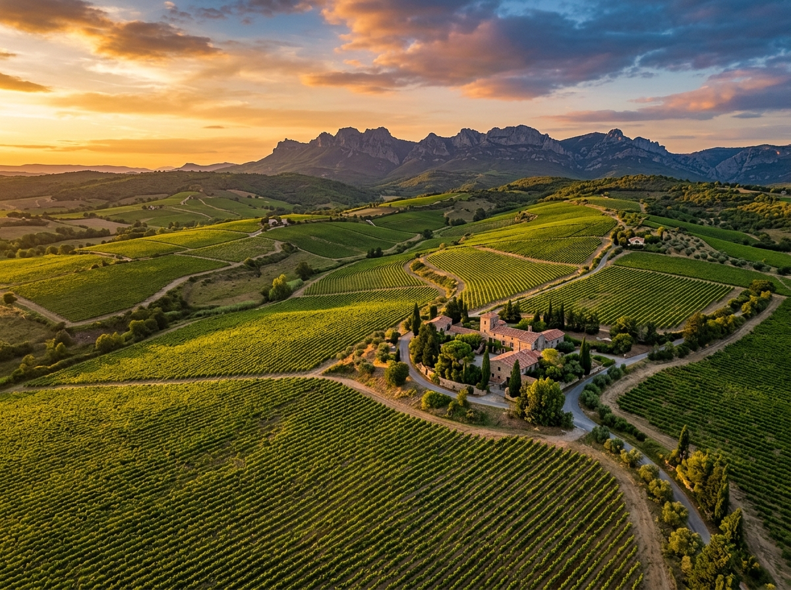
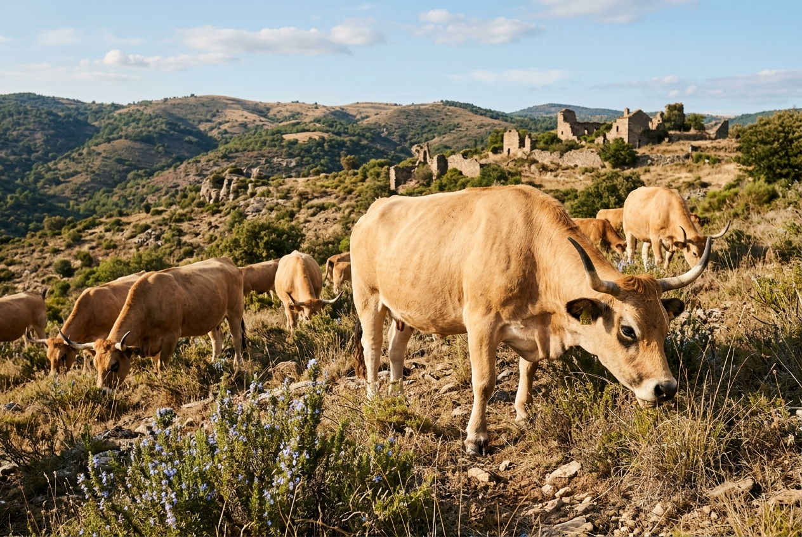

Strategisk analys av egendomens 307 hektar (varav 250 ha Natura 2000-skyddat). Vi utvärderar avveckling av storskalig vinproduktion till förmån för lokala samarbeten, ekologisk boskapsskötsel och moderna, hållbara grödor.
Château Corbières har en stark vinhistorik med 3,4 ha befintliga vinfält (AOP Corbières-Boutenac) och 30 ha planteringsrätt. Att driva en fullskalig vinproduktion i egen regi (renovera vinkällare, investera i maskiner, anställa vinmakare och marknadsföra ett nytt varumärke) bedöms dock vara ekonomiskt olönsamt och behäftat med hög operativ risk.
Istället rekommenderas en **samarbetsmodell** där marken och odlingarna arrendera ut till framgångsrika, närliggande producenter eller lokala kooperativ.

30 ha planteringsrätt arrenderas ut lokalt
Utnyttjande av egendomens 270 hektar hed- och skogsmark för ekologisk boskapsskötsel (varav 250 ha omfattas av Natura 2000-skydd, vilket kräver skonsam hävd).

Klimattålig och naturlig uppfödning
Fastighetens stora areal av garrigue (medelhavsbuskage och hedmark) är en outnyttjad resurs. Genom att introducera tåliga nötkreatur kan marken skötas naturligt samtidigt som den genererar högvärdigt protein.
Dessa rustika franska bergsorganismer är kända för sin extrema tålighet, lätta kalvningar och förmåga att tillgodogöra sig magert bete. De klarar de heta somrarna och torra terrängen i Occitanie utmärkt utan behov av isolerade stallar.
Från lokal småskalig gourmetproduktion till storskalig certifierad ekologisk drift.
| Scenario | Besättning | Initial CapEx | Årlig Drift (OpEx) | Nettoresultat / år |
|---|---|---|---|---|
| 1. Småskalig (Gourmet / Hotell) | 20 moderdjur + kalvar |
30 000 € (Hägnad, enklare vindskydd) |
15 000 € (Foderinköp, veterinär) |
+10 000 € (Gårdsförsäljning & hotellkök) |
| 2. Mellanskalig (Köttlådor / Lokal) | 60 moderdjur + rekrytering |
90 000 € (Utökad hägnad, traktorredskap) |
45 000 € (Inkl. deltidsskötsel) |
+40 000 € (Direktförsäljning till restauranger) |
| 3. Storskalig (Ekologisk industriell) | 150 moderdjur full besättning |
250 000 € (Hanteringsfållor, maskiner, brunnar) |
120 000 € (Heltidsanställd djurskötare) |
+100 000 € (Bio / Label Rouge grossistkontrakt) |
Vi rekommenderar att starta i **Scenario 1 (småskalig)** parallellt med hotellbygget. Det skapar ett starkt marknadsföringsvärde för boutiquehotellet ("egenproducerat ekologiskt Aubrac-kött") och kräver minimalt kapital. Efterhand som nätanslutningar och infrastruktur säkrats kan verksamheten skalas upp till **Scenario 2** för att leverera köttlådor till Narbonne- och Carcassonne-området, vilket ger bäst marginaler per kilo.
Moderna, klimattåliga och ekonomiskt starka grödor som ligger i tiden och minimerar vattenförbrukningen.
Occitanie är känt för den exklusiva svarta tryffeln (*Tuber melanosporum*). Genom att plantera 2 ha tryffel ek (ekträd vaccinerade med tryffelsporer) skapas en extremt högmarginalprodukt.
Egendomen har idag ca 1 ha olivlund. Genom att expandera denna till 5 ha kan slottet producera sin egen premium kallpressade olivolja (AOP Huile d'olive du Languedoc).
Att odla ekologiska kikärter och linser på de platta, brukbara delarna av egendomen. Dessa baljväxter är naturligt anpassade för det torra klimatet och kräver ingen konstbevattning.